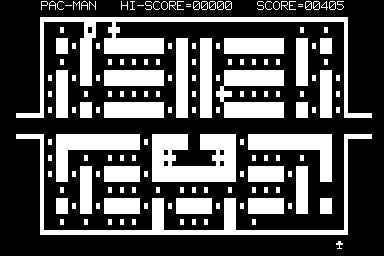
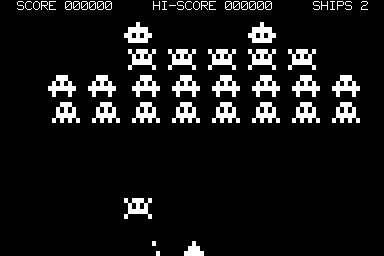
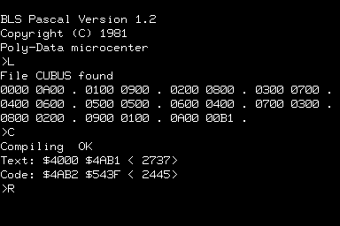
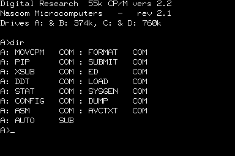

The Nascom Home PageLast update: 2022-05-09 TT |
|
News
Overview Virtual Nascom Gallery Nascom Repository Pictures Links Mirrors |
For years we've had various versions of BLS Pascal (Tape version 1.0 and 1.2 and ROM versions as well as variations). We knew a version 1.3 existed but the only copy on the net was corrupted.
A few years ago we discovered a that Data Museum had a picture of a tape with it and yesterday they shared a digital version: BLS Pascal 1.3.
It's not immediately obvious what it changes from 1.2 and sadly we have no documentation, but from a quick glance of the binary, it doesn't seem like much. However, the starting address is now 1000 for a cold start and 2140 for a warm start.
A big thank-you to Martin Sørensen, Finn Verner Nielsen, Uffe Jakobsen, and Peter Jensen who all contributed to making this possible.
Morten:
The file has been kindly provided by Jimmy Maher over at The Digital
Antiquarian. He wrote an article on the Nascom Colossal Adventure
from Level 9 (https://www.filfre.net/2012/10/level-9/),
and I noticed he had screenshots of the game.
...
In particular, I noticed the entry "Colossal Adventure 16K and 32K version (Level 9)." and the files therein. I knew very well the Level 9 Colossal Adventure, but I was not that familiar with Level 9's early work on the Nascom. Assuming that the "32K" version was something Level 9 did early on, predating the work on other micros, I started to disassemble the file to understand how this differed from what I had seen on C64, the BBC etc. After hacking together a z80 trace tool I managed to re-engineer the text compression routines in C (the text compression is based on Huffman variable bit-encoding) and I could list the various texts in the game. Only to find the text "Adventure 32k copyright (c) 1982 Michael J. Evis" (message #200 of the message texts). A further look revealed that you can provoke this text in-game by entering "AUTH" for Author.
Just wanted to let you know that you should consider changing the text on your page to credit Mr. Evis instead. A qualified guess is that the "32K" code is similar to what was released for the ZX Spectrum a year later (worldofspectrum). The Spectrum version has earned a place in the Adventure Family Tree.
Garath:
It is actually a completely different port of the mainframe game,
produced by Michael J. Evis/Syrtis Software in early 1981;
pre-dating the Level 9 version by at least a few months. see, my
page about the game
here... http://8bitag.com/info/syrtis-adventure.html.
Syrtis Adventure, as I call it to avoid all the issues with so
many games with the same name, seems to have been first released
in 1981 as a 16K game for Nascom, before being produced as an
expanded version (more accurately aping the mainframe text) in
1982. Again, extensive references to all these versions are on my
website. The game was later ported to the Spectrum.
This matches the information your user extracted from the 32K file.
It could still be Level 9's initial version of Colossal Adventure.
I hope it is... as the 16K version of that game does not exist in
any form, despite being produced for multiple systems.
See... http://8bitag.com/info/level-9.html.
Unfortunately, we are still seeking the lost 16K version.
We have finally updated the reference and attribution. Note, this means we have the following similar, but different programs:
Added a (long-overdue) fantastic contribution from Thorleif Bundgaard:
"Im searching for an old NASCOM Dungeon like game, where the task is to stop a bomb from exploding, but didn't find it.
I got into contact with a guy 'Anders Hejlsberg' later to be one of the founders of BORLAND. He had made the first real compiler for the NASCOM, called 'Blue Label Pascal'. In 1984 Anders gave me the source for the floating point routines used in this Pascal. The special thing about this code is that it keeps all its computations on the stack, so you dont have to set aside some RAM areas. And the code is completely relocatable.
I also have a printed description that Anders made (In Danish), Most is just CALL descriptions, so I guess that anyone speaking English will understand our language well enough, however I also did a translation."
I found the copy of NimBot on your web, and noticed that it has incorrect graphics. This is very understandable, considering it was typed in from a printed magazine.
And due to Nascom BASIC having a bug with LIST expanding tokens within strings, this makes guessing the correct graphic for the garbage almost impossible!
When C&VG asked for permission to publish NimBot, they didn't ask for any help with the graphics - they just printed it. I laughed when I saw the copy : ``Have fun typing that in!"
Recently, I was salvaging data from my ancient Nascom floppy disks, which wasn't easy; as my disk controller died about 20 years ago.
I wrote a disk reader for my Tatung Einstein, and managed to read most of the disks. One of the disks had a NimBot file, but it was corrupt. Luckily, the sector with the graphics was intact, so I combined it with the copy from your web to recreate the original."
Thank you to Carl for the update and the backstory (I appologies for taking two month to convert the NAS to CAS).
A group of members has written a DOS and CP/M 2.2 for this interface. The interface was switchable for 5 and 8 inch drives. The picture of the prototype board for this interface and an eprom programmer.
"The story,
A friend of mine (Mick Waters) persuaded me to buy a Nascom 2 (I was thinking about a CompuKit UK 101, a close shave!) as he has already bought one and said it was much better than the CompuKit. Well while I was building mine we purchased this book and spend an entire night typing it into his 16K Nascom 2, only to find that it wouldn't run as there wasn't enough RAM.
Needless to say we quickly borrowed my 4116 chips from my N2 kit (I was quite nervous) to up his 16K to get 32K so we could run the game J (at least we were able to save it).
Some years later I upgraded the N2 to a CP/M system, courtesy of a Gemini Disk card and merrily converted my favourite game to CP/M. But things moved on and I bought more computers but didn't stop using my CP/M Nascom 2/Gemini hybrid system until I bought my first PC (around 1994).
However thanks to CP/M emulators and vnascom I have been able to re-convert this game back into the Nascom 2 MBASIC version. I can't guarantee that I haven't made any typos in this version given that it has been ported to and from CP/M but it seems to run just fine in vnascom. I hope that it is of some interest and include it here."
Ken Smith writes us that "I have available a nascom2
computer plus 48k memory card plus graphics card plus PIO card plus
twin 51/4 floppies with card plus power supply. Seems to be working
ok. Free gift to enthusiast.
Ken Smith Wimborne, Dorset"
The Nascom (1 and 2) were computer kits from the UK based Nasco, later Lucas, around the Z80 processor, sold in the early 1980s. This remarkable piece of hardware contained:
The purpose of this page is to gather as many Nascom resources as possible and to make them available. If you have Nascom resources you would like to make available, please do not hesitate to send them to
VNascom is an alternatively emulator written by Constantin for Windows. The latest version is
Virtual Nascom Version 3.1 for DOS/Win9x/ME.
The current version has bit level correct screen output and complete
keyboard emulation. It run all the programs We've tried, which includes
most games available. New in Version 3.1: CP/M Version 2.2 runs on
standard Nascom screen as well as on the AVC.
Hans Rietveld contributed a front-end for Vnascom.
A new Nascom 2/3 emulator version 1.2 in Java written by Richard Espley is available.
|
PACMAN |
|
|  | One of the best Nascom games. |
|
GALAXY ATTACK |
|
|  | 1981 by South East London Software. |
|
BLUE LABEL SOFTWARE PASCAL |
|
|  | 1981 by Blue Label Software. If there are any software classics for Nascoms, this is one of the bests. |
|
Digital Research CP/M 2.2 on Nascom 3 |
|
|  | CP/M 2.2 on a Nascom 3 with screen editing 1982. |
Mike Fox offers this tip on How to automatically Read NAS files into a Nascom (open the linked zip file for more information).
Utilities for the PC written in Microsoft QBASIC (MS-DOS, Win9x, Windows NT):
Interesting though that part 4 came out in Feb 1978, as this puts part 1 in about Nov 1977 - so it seems the design was being published at about the same time that the Nascom 1 was being first produced? Open source doesn't seem to be a modern invention then.
Paul provided parts 4 & 5 of the series, while John provided the remainder and converted Paul's to space saving PNG format. Thank you both.
{kind=link}
{kind=link}
{kind=link}
{kind=link}
{kind=link}
{kind=link}
![picture of the keyboard [141 KB]](pics/NASKBD.JPG){kind=link}
![picture of the I/O connectors [163 KB]](pics/NASBACK.JPG){kind=link}
{kind=link}
{kind=link}
{kind=link}
{kind=link}
{kind=link}
{kind=link}
{kind=link}
{kind=link}
{kind=link}
{kind=link}
{kind=link}
{kind=link}
{kind=link}
{kind=link}
{kind=link}
{kind=link}
{kind=link}
{kind=link}
{kind=link}
{kind=link}
{kind=link}
{kind=link}
{kind=link}
{kind=link}
{kind=link}
{kind=link}
{kind=link}
{kind=link}
{kind=link}
{kind=link}
{kind=link}
{kind=link}
{kind=link}
{kind=link}
{kind=link}
{kind=link}
{kind=link}
{kind=link}
{kind=link}
{kind=link}
{kind=link}
{kind=link}
{kind=link}